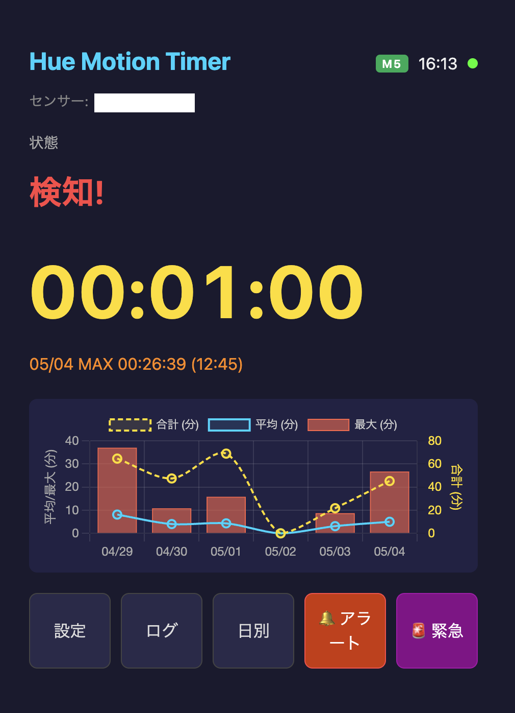

Philips Hue 人感センサーで滞在時間を計測。M5Stack と Web ブラウザでリアルタイム表示 — Home Assistant 不要。

Web ダッシュボード（設定で英語に切り替え可能）会議室・休憩室の実利用時間を計測して稼働率を分析。利用頻度データに基づいた清掃タイミングの最適化。
トイレの頻度と滞在時間を日別に記録し、生活リズムの変化を可視化。デスクワークの連続時間を計測して座りすぎ防止。
深夜の徘徊を廊下・玄関のセンサーで検知。日常の行動パターンの変化を統計データで早期に把握。
浴室やトイレの異常な長時間滞在を検知してアラート。一人暮らしの高齢者や子供の安否確認。
留守番中の活動パターンを部屋ごとに記録。普段と違う場所への長時間滞在で異常行動を検知。
ON/OFF ではなく、最初の検知からの滞在時間をリアルタイムに計測・表示。
Hue Bridge API に直接接続。Home Assistant などのプラットフォーム不要。
LCD + スピーカー付き M5Stack と Web ダッシュボード。それぞれ独立動作可能。
時間経過に応じた通常アラートと緊急アラートを設定可能。
日別統計（平均/最大/最小/合計）のグラフ表示と長期ログ保存。
Bridge 自動探索、ボタン押下で API キー取得、画面上でセンサー選択。
| 機能 | M5Stack | Web |
|---|---|---|
| リアルタイムタイマー | ✓ | ✓ |
| 複数センサー対応 | — | ✓ (最大20) |
| センサーごとのアラート設定 | — | ✓ |
| アラートメロディ | ✓ (スピーカー) | ✓ (Web Audio) |
| 緊急アラート | ✓ | ✓ |
| リモートアラート (Web → M5) | ✓ | ✓ |
| ログ履歴 | 20件 | 1000件 |
| 日別統計 | 10日分 | 2年分 |
| 日別グラフ | — | ✓ |
| 時計・バッテリー | ✓ | ✓ (時計) |
| タイマー復元 | ✓ | ✓ |
| IP ホワイトリスト | — | ✓ |
| 多言語 (EN/JA) | ✓ | ✓ |
M5Stack Basic (ESP32)、Philips Hue Bridge (V1/V2)、Hue 人感センサー、Arduino CLI または IDE
Node.js 18 以上、Apache 2.4 以上 + mod_proxy、Hue Bridge へのネットワークアクセス